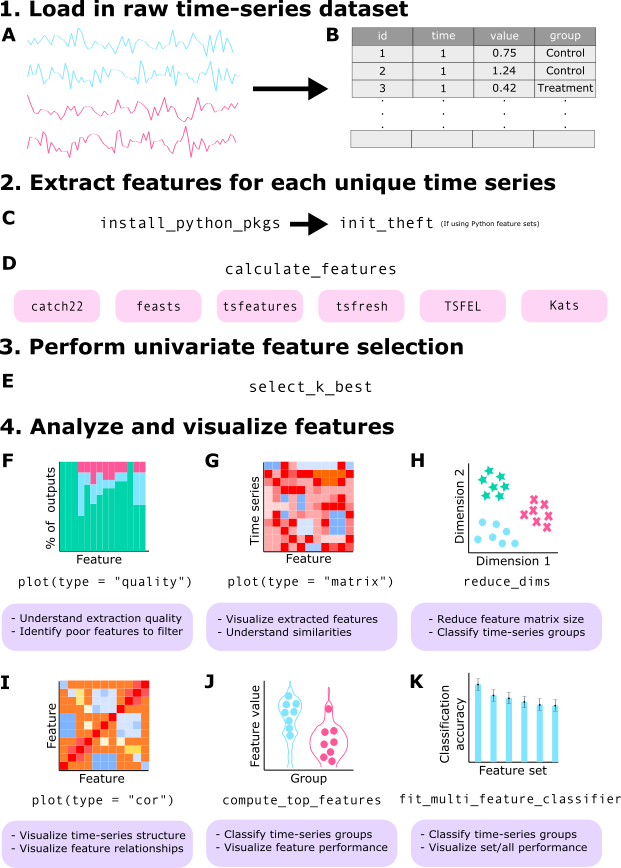
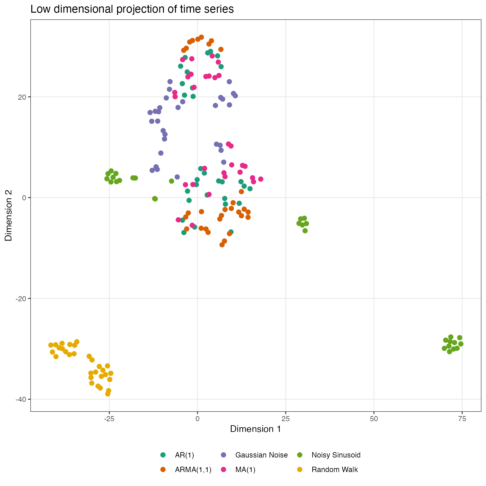
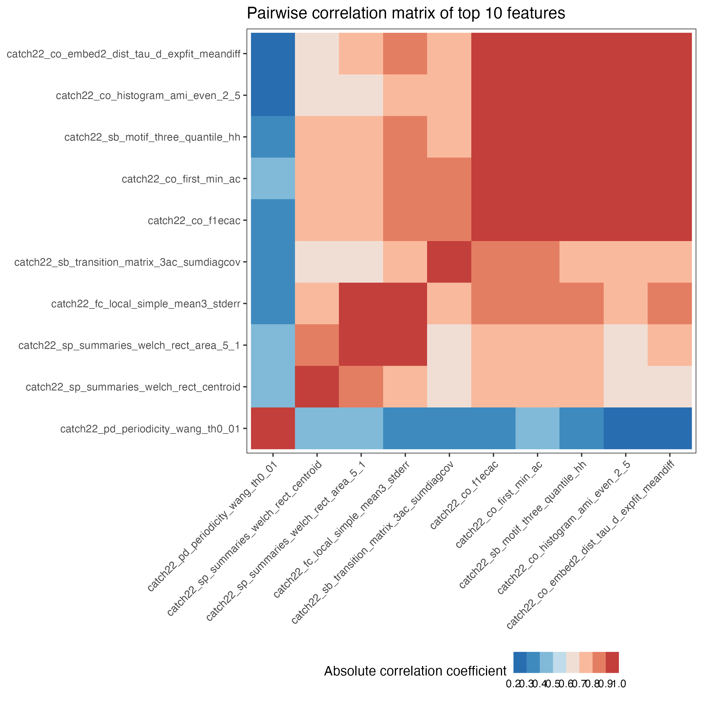

Purpose
theft facilitates user-friendly access to a structured
analytical workflow for the extraction, analysis, and visualisation of
time-series features. This structured workflow is presented in the
graphic below (note that theft has many more functions than
displayed in this graphic — keep reading for more):

Core calculation functions
To explore package functionality, we are going to use a dataset that
comes standard with theft called simData. This
dataset contains a collection of randomly generated time series for six
different types of processes. The dataset can be accessed via:
theft::simDataThe data follows the following structure:
head(simData)
#> values timepoint id process
#> Gaussian Noise.1 -0.6264538 1 Gaussian Noise_1 Gaussian Noise
#> Gaussian Noise.2 0.1836433 2 Gaussian Noise_1 Gaussian Noise
#> Gaussian Noise.3 -0.8356286 3 Gaussian Noise_1 Gaussian Noise
#> Gaussian Noise.4 1.5952808 4 Gaussian Noise_1 Gaussian Noise
#> Gaussian Noise.5 0.3295078 5 Gaussian Noise_1 Gaussian Noise
#> Gaussian Noise.6 -0.8204684 6 Gaussian Noise_1 Gaussian NoiseCalculating feature summary statistics
The core function that automates the calculation of the feature
statistics at once is calculate_features. You can choose
which subset of features to calculate with the feature_set
argument. The choices are currently "catch22",
"feasts", "Kats", "tsfeatures",
"tsfresh", and/or "TSFEL".
Note that Kats, tsfresh and
TSFEL are Python packages. The R package
reticulate is used to call Python code that uses these
packages and applies it within the broader tidy data philosophy
embodied by theft. At present, depending on the input
time-series, theft provides access to \(>1200\) features.
Installing Python feature sets
Prior to using theft (only if you want to use the
Kats, tsfresh or TSFEL feature
sets; the R-based sets will run fine) you should have a working Python
3.9 installation and run the function
install_python_pkgs(python_path, path) after first
installing theft, where the python_path
argument is the filepath to the location of Python 3.9 on your machine
and the path argument is the location you wish to install
the Python libraries and virtual environment to on your machine.
For example, if you wanted to install the Python libraries and the
resulting virtual environment in
"C:/Users/User/Desktop/theft" and Python 3.9 is located at
"/usr/bin/python" on your machine, you would run the
following after first having installed theft:
install_python_pkgs("C:/Users/User/Desktop/theft", "/usr/bin/python")If you want to use any of the Python-based packages, you must first
tell R which Python and/or virtual environment on your computer contains
the installed libraries. This can be done in theft via the
init_theft function, which has two arguments:
-
python_path– the filepath to the version of Python you wish to use (i.e., the same as was entered intoinstall_python_pkgsif you ran that first) -
venv_path– the filepath to the Python virtual environment wheretsfresh,TSFEL, and/orKatsare installed (i.e., the path returned in the console message frominstall_python_pkgsif you ran that function first)
However, you do not necessarily have to use this convenience
function. If you have another method for pointing R to the correct
Python (such as reticulate or findpython), you
can use those in your workflow instead.
NOTE: You only need to call init_theft
or your other solution once per session.
Calculating features
You are then ready to use the rest of the package’s functionality,
beginning with the extraction of time-series features. Here is an
example with the catch22 set:
feature_matrix <- calculate_features(data = simData,
id_var = "id",
time_var = "timepoint",
values_var = "values",
group_var = "process",
feature_set = "catch22",
seed = 123)Note that for the catch22 set you can set the additional
catch24 argument to calculate the mean and standard
deviation in addition to the standard 22 features:
feature_matrix <- calculate_features(data = simData,
id_var = "id",
time_var = "timepoint",
values_var = "values",
group_var = "process",
feature_set = "catch22",
catch24 = TRUE,
seed = 123)A tidy dataframe of most of the included features and the
set they correspond to is available in the dataframe
feature_list:
head(feature_list)
#> feature_set feature
#> 1 catch22 DN_HistogramMode_5
#> 2 catch22 DN_HistogramMode_10
#> 3 catch22 CO_f1ecac
#> 4 catch22 CO_FirstMin_ac
#> 5 catch22 CO_HistogramAMI_even_2_5
#> 6 catch22 CO_trev_1_numNOTE: If using the tsfresh feature set, you might want
to consider the tsfresh_cleanup argument to
calculate_features. This argument defaults to
FALSE and specifies whether to use the in-built
tsfresh relevant feature filter or not. If you are seeking
a fast solution to select good features, theft has a
function select_k_best that uses the \(F\)-statistic from analysis of variance
(ANOVA) if a classification setting is detected or the absolute Pearson
correlation coefficient if a regression setting is detected to perform
fast and simple univariate feature selection. select_k_best
has 3 arguments:
-
data– thefeature_calculationsobject containing the extracted features fromcalculate_features -
k– the number of features you wish to retain. Defaults to half of the number of features identified indata(but we are manually specifying 10 in this example) -
outputs– (optional) a data frame containing an ID column (that matches the IDs indata) and a column of the output value vector you are interested in. Usually, this would be included as thegroupvariable incalculate_features, but theoutputsoption here lets you pass in such information if it was omitted during feature calculations
feature_matrix_small <- select_k_best(data = feature_matrix, k = 10)Comparison of feature sets
For a detailed comparison of the six feature sets, see this paper for a detailed review1.
Data quality checks
The calculate_features function returns an object of
class feature_calculations. Objects of this type are
purposefully looked-for by other functions in theft.
Because it is a class, simple methods such as plot() can be
called on the object to produce a range of statistical graphics. The
first is a visualisation of the data types of the calculated feature
vectors. This is useful for inspecting which features might need to be
dropped due to large proportions of undesirable (e.g., NA,
NaN etc.) values. We can specify the plot
type = "quality to make this graphic:
plot(feature_matrix, type = "quality")
Normalising/scaling functions
Putting calculated feature vectors on an equal scale is crucial for
any statistical or machine learning model as variables with high
variance can adversely impact the model’s capacity to fit the data
appropriately, learn appropriate weight values, or minimise a loss
function. theft includes function normalise to
rescale either the whole feature_calculations object, or a
single vector of values (e.g. values for all participants on just the
SB_BinaryStats_mean_longstretch1 feature). Four
normalisation methods are offered:
- z-score –
"z-score" - Sigmoid –
"Sigmoid" - Outlier-robust Sigmoid (credit to Ben Fulcher for creating the
original MATLAB
version) -
"RobustSigmoid" - Min-max –
"MinMax"
Normalisation on the whole feature_calculations object
can be performed in one line:
normed <- normalise(feature_matrix, method = "z-score")For single vector normalisation, all you need to do is pass in a
vector as normalise checks for object classes.
Data visualisation and low-dimensional project functions
The package also comes with additional statistical and graphical functionality:
- Feature by time-series matrix as a heatmap
- Low dimensional projections of the feature space and plotting as a scatterplot
- Pairwise feature correlation matrix as a heatmap
Feature matrices
The function calling type = "matrix" in
plot() on a feature_calculations object takes
itand produces a ggplot object heatmap showing the feature
vectors across the x axis and each time series down the
y axis. Prior to plotting, the function hierarchically
clusters the data across both rows and columns to visually highlight the
empirical structure. Note that you have several options for the
hierarchical clustering linkage algorithm to use:
-
"average"(default) "ward.D""ward.D2""single""complete""mcquitty""median""centroid"
See the hclust
documentation for more information.
Note that the legend for this plot (and other matrix visualisations
in theft) have been discretised for visual clarity as
continuous legends can be difficult to interpret meaningful value
differences easily.
plot(feature_matrix, type = "matrix")
You can control the normalisation type with the method
argument and the hierarchical clustering method with the
clust_method argument (the example above used defaults so
manual specification was not needed).
Low dimensional projections
The function reduce_dims takes the
feature_calculations object and calculates either a
principal components analysis (PCA) or t-distributed stochastic
neighbour embedding (t-SNE) fit on it. This result is stored in
a custom object class called low_dimension:
low_dim <- reduce_dims(feature_matrix,
method = "RobustSigmoid",
low_dim_method = "PCA",
seed = 123)We can similarly call plot() on this object to produce a
two-dimensional scatterplot of the results:
plot(low_dim)
Alternatively, a t-SNE version can be specified in a similar
fashion, with the perplexity hyperparameter able to be
controlled by the user. Typical values for this range between 5 and 50,
depending on the size of the data. At lower levels of
perplexity, local variations tend to dominate, while at
very high levels of perplexity, results can be
uninterpretable as clusters can merge. See this interactive
article for a detailed review. Shaded covariance ellipses can also
be disabled when plotting low_dimension objects by setting
show_covariance = FALSE:
low_dim2 <- reduce_dims(feature_matrix,
method = "RobustSigmoid",
low_dim_method = "t-SNE",
perplexity = 10,
seed = 123)
plot(low_dim2, show_covariance = FALSE)
Pairwise correlations
You can plot correlations between feature vectors using
plot(type = "cor") on a feature_calculations
object:
plot(feature_matrix, type = "cor")
Similarly, you can control the normalisation type with the
method argument and the hierarchical clustering method with
the clust_method argument (the example above used defaults
so manual specification was not needed).
Time-series classification
Feature-by-feature
Since feature-based time-series analysis has shown particular promise
for classification problems, theft includes functionality
for exploring group separation in addition to the low dimensional
representation. The compute_top_features function takes a
feature_calculations object and performs the following:
- Processes the data ready for analysis
- Computes a classification algorithm or statistical model on the
entire input
feature_calculationsobject - Extracts individual feature performance from the classification algorithm using a designated performance metric
- Filters the feature data to the top
nperforming features (wherenis specified by the user) - Plots a feature \(\times\) feature correlation matrix as a heatmap for the top performing features
- Plots a group of violin plots coloured by class label for the top performing features
This analysis is useful because it can help guide researchers toward more efficient and appropriate interpretation of high-performing features (if any exist) and helps protect against over-interpretation of feature values.
This function returns an object with three components to summarise the above steps:
-
ResultsTable– a dataframe containing feature names, feature set membership, and performance statistics for the top performing features -
FeatureFeatureCorrelationPlot– aggplotcontaining the pairwise correlations between top performing features represented as a heatmap -
ViolinPlots– aggplotcontaining a matrix of violin plots showing class discrimination by feature
The code below produces analysis for a multiclass problem using a
Gaussian process classifier with a radial basis function kernel. It
implements a custom “empirical null” procedure for estimating a
p-value based on classification accuracy of the real data
compared to a distribution of null samples built from classification
accuracies of the same data but with random class label shuffles. This
is also known as permutation testing (see this
document2 for a good overview). Note that higher
numbers of permutation samples means that a better empirical null
distribution can be generated. It is recommended to run 100-1000
permutations, though this comes with considerable computation time.
We’ll enable a k-fold
cross-validation procedure too for good measure. Note that using
these procedures increases the computation time. Electing to not use an
empirical null will be faster, but top features will be determined based
off classification accuracy of features and not p-values.
Further, when use_k_fold = FALSE, the model will instead be
fit on all data and predict classes based off the same data (in
caret language, this is equivalent to
caret::trainControl(method = "none") and then calling
predict on the input data and getting accuracy from the
confusion matrix between the two). This will very likely lead to
overfitting, but will return results orders of magnitude faster than if
use_k_fold = TRUE.
Importantly, the argument null_testing_method has two
choices:
-
ModelFreeShuffles– Generatesnum_permutationsnumber of random shuffles of group labels and computes the proportion that match, returning a distribution of “accuracies”. This model is extremely fast as it involves no null model fitting -
NullModelFits– Generatesnum_permutationsnumber of models that are trained and tested on data where the class label is shuffled. This method is slow but fits separate null models for eachnum_permutationsshuffle
We we only use ModelFreeShuffles throughout this
tutorial to reduce computation time.
p_value_method also has two choices:
-
empirical– calculates the proportion of null classification accuracies that are equal to or greater than the main model accuracy -
gaussian– calculates mean and standard deviation of the null distribution to analytically calculate p-value for main model against. Initial package testing indicated that the null distributions (especially for increasingnum_permutations) were approximately Gaussian, meaning this approach can be feasibly used
Note that ModelFreeShuffles is incompatible with
pool_empirical_null = TRUE as the null distributions would
be exactly the same. Further, if you set
pool_empirical_null = TRUE this will compute statistical
analysis for each feature against the entire pooled empirical null
classification results of all features. Setting it to FALSE
will compute a p-value for each feature against only its
empirical null distribution.
IMPORTANT NOTE: theft currently does
not label any results as “statistically significant”. If you intend to
in your work, please adjust for multiple comparisons when considering
numerous results against a threshold (e.g., \(\alpha = 0.05\)) and ensure any decisions
you make are grounded in careful thought.
The seed argument allows you to specify a number to fix
R’s random number generator for reproducible results. It defaults to
123 if nothing is provided.
outputs <- compute_top_features(feature_matrix,
num_features = 10,
normalise_violin_plots = FALSE,
method = "RobustSigmoid",
cor_method = "pearson",
test_method = "svmLinear",
clust_method = "average",
use_balanced_accuracy = FALSE,
use_k_fold = TRUE,
num_folds = 3,
use_empirical_null = TRUE,
null_testing_method = "ModelFreeShuffles",
p_value_method = "gaussian",
num_permutations = 3,
pool_empirical_null = FALSE,
seed = 123)Each component is named and can be accessed through regular use of
the $ operator. Here is the feature-feature correlation
plot:
print(outputs$FeatureFeatureCorrelationPlot)
And here is the violin plot:
print(outputs$ViolinPlots)
For two-class problems, users can fit statistical models to directly
compute p-values by specifying one of the following models as
the string argument to test_method: "t-test",
"wilcox" or "BinomialLogistic".
theft has special procedures for these three options if a
two-class problem is registered and thus none of the function arguments
pertaining to empirical null testing or classification model parameters
are used. For multiclass problems (and binary), users can specify any
model name string that is a valid method name in the
popular caret
package and theft will pass this through to the relevant
sub-procedures which will make use of the arguments relating to
k-fold cross-validation, permutation testing, and
p-value calculation.
Multi-feature
A multi-feature option is also available. The
fit_multi_feature_classifier function fits all features in
the feature_calculations object at once instead of by
individual features to estimate classification accuracy. This can be
split by feature set (if the by_set argument is set to
TRUE) to enable systematic comparisons between those made
available in theft. To save computation time in this
tutorial, we will only analyse catch22 (with
by_set = TRUE to demonstrate automated plotting
functionality), but comparing multiple calculated feature sets is
recommended in practice.
Now we can use our multi-feature functionality (note the similarity in options to the single feature version we specified above):
multi_outputs <- fit_multi_feature_classifier(feature_matrix,
by_set = TRUE,
test_method = "svmLinear",
use_balanced_accuracy = TRUE,
use_k_fold = TRUE,
num_folds = 3,
use_empirical_null = TRUE,
null_testing_method = "ModelFreeShuffles",
p_value_method = "gaussian",
num_permutations = 3,
seed = 123)We can now access the various named objects returned by this function, which include:
-
FeatureSetResultsPlot(only ifby_setis set toTRUE) – aggplotdisplaying classification accuracy (or balanced classification accuracy ifuse_balanced_accuracyis set toTRUE) by feature set -
TestStatistics– a dataframe containing a summary of test statistics (and p-values ifuse_empirical_nullis set toTRUE) -
RawClassificationResults– a dataframe containing classification accuracies results from each main and null prediction
Here’s the feature set comparison plot (note that because we have
balanced classes, in this case, accuracy \(=\) balanced accuracy; and because we only
calculated features for catch22, the accuracy for
"All features" \(=\)
accuracy for catch22):
print(multi_outputs$FeatureSetResultsPlot)
Note that for the multi-feature version, only valid
caret method names are able to be used to specify a
test_method.
Reading and processing hctsa-formatted files
As theft is based on the foundations laid by hctsa, there
is also functionality for reading in hctsa-formatted Matlab
files and automatically processing them into tidy dataframes ready for
feature extraction in theft. The
process_hctsa_file function takes a string filepath to the
Matlab file and does all the work for you, returning a dataframe with
naming conventions consistent with other theft
functionality. As per hctsa specifications for Input
File Format 1, this file should have 3 variables with the following
exact names: timeSeriesData, labels, and
keywords. Here is an example using the Bonn
University EEG dataset3.
d2 <- process_hctsa_file("https://cloudstor.aarnet.edu.au/plus/s/6sRD6IPMJyZLNlN/download")T. Henderson and B. D. Fulcher, “An Empirical Evaluation of Time-Series Feature Sets,” 2021 International Conference on Data Mining Workshops (ICDMW), 2021, pp. 1032-1038, doi: 10.1109/ICDMW53433.2021.00134.↩︎
Rice, Ken & Lumley, Thomas. (2008) “Permutation tests”↩︎
Andrzejak, Ralph G., et al. (2001) “Indications of nonlinear deterministic and finite-dimensional structures in time series of brain electrical activity: Dependence on recording region and brain state.” Physical Review E 64(6): 061907↩︎